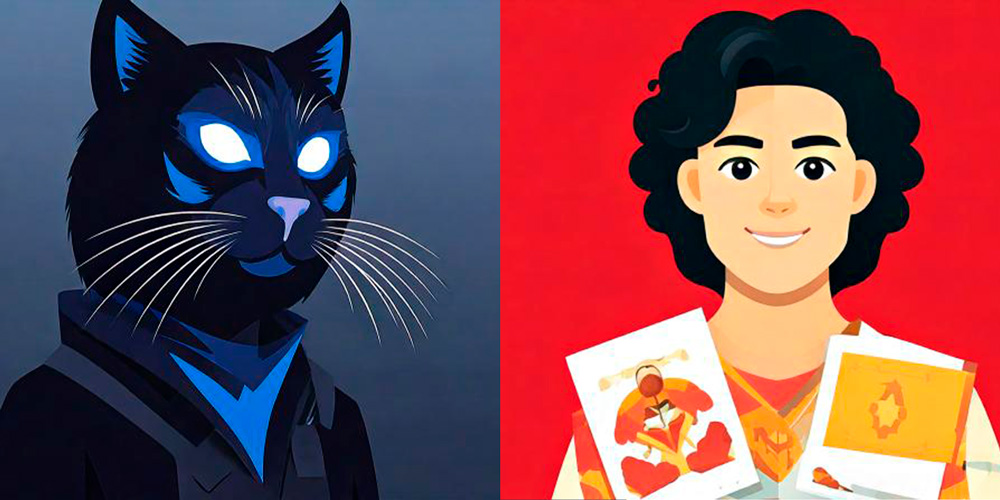
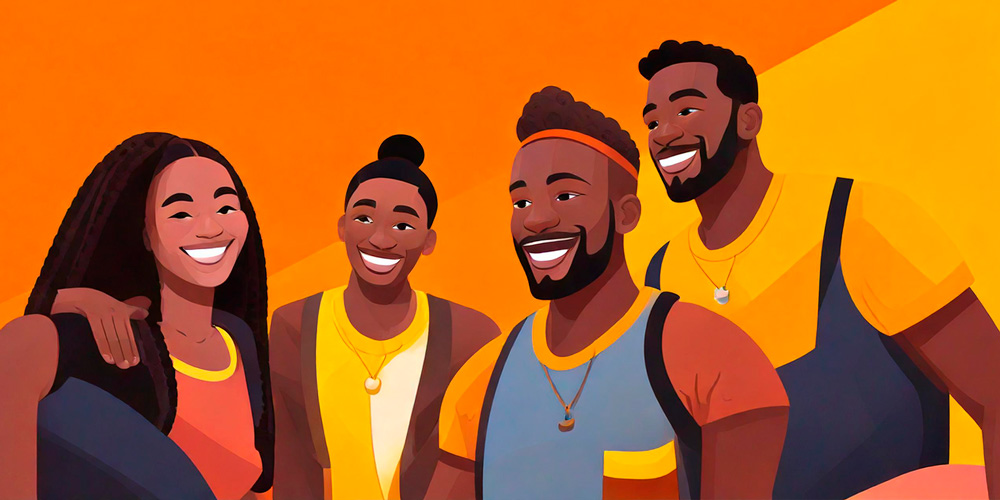

Character
creator
Nuestra página permite crear cartas de personajes únicas con historias envolventes, ideales para juegos de rol, escritura creativa o coleccionismo. Con solo unos clics, genera un personaje con nombre, apariencia, habilidades y un trasfondo narrativo detallado.
Cada historia es original, adaptada al género y estilo que elijas, desde fantasía épica hasta ciencia ficción. Además, puedes personalizar atributos para que cada personaje encaje perfectamente en tu mundo. ¡Explora infinitas posibilidades y da vida a tus propias leyendas!
¡Dale a Crear y empieza la aventura con nosotros!
1 Para empezar
Crear una carta de personaje comienza con una idea base: ¿qué tipo de historia quieres contar? Puede ser un héroe legendario, un villano astuto o un aventurero en busca de gloria. Definir su propósito en la historia ayudará a dar coherencia a su diseño. Desde la ambientación hasta la personalidad, cada detalle influye en la experiencia narrativa. Una vez claro el concepto, se pasa a definir sus características.

2 Definir características
Las características de un personaje incluyen su apariencia, habilidades y personalidad. Puedes elegir rasgos físicos como altura, color de ojos y vestimenta, así como talentos especiales que lo diferencien. Además, su trasfondo debe justificar sus fortalezas y debilidades, creando un equilibrio narrativo. Un pasado trágico puede explicar su motivación, mientras que un entrenamiento riguroso puede justificar sus habilidades.
Cada personaje también debe tener objetivos y relaciones que lo conecten con su mundo. ¿Tiene aliados o enemigos? ¿Qué lo impulsa a actuar? Su historia debe incluir conflictos internos y externos que lo hagan interesante. Estas características no solo lo hacen único, sino que también le dan profundidad a sus acciones. Una vez definido, el siguiente paso es llevarlo a la carta visualmente.
3 Finalizar

El diseño de la carta transforma los rasgos en una imagen atractiva y llamativa. Se eligen ilustraciones, fuentes y colores que representen la esencia del personaje. Cada elemento visual debe reforzar su identidad y encajar en la ambientación elegida. Además, se organizan sus características de manera clara y legible para facilitar su uso. Una carta bien diseñada no solo es estética, sino también funcional.